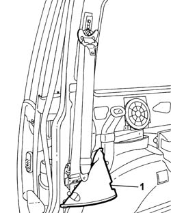
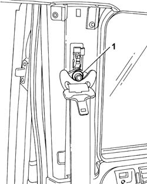
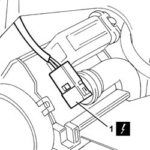
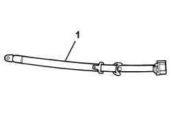

7065B08 REAR SEAT BELT (ONE) WITH PRETENSIONER ON REEL, LEFT OR RIGHT - R.R.
- Path
- Procedures > 70 FITTINGS > 7065 SAFETY BELTS AND ACCESSORIES > 7065B REAR SAFETY BELTS > 7065B08 REAR SEAT BELT (ONE) WITH PRETENSIONER ON REEL, LEFT OR RIGHT - R.R.
- Kind
- repair procedure (removal / refitting; the operation number is the code)
- Applies to
- all engines; all production periods
- Interactive page
- https://sloeber94.github.io/elrnDB-fUlss/en/#/179007942
Applies to: all engines; all production periods
 Removing
Removing
 Refitting
RefittingOp. 5530B56 BATTERY DRIP TRAY COVER - R.R.
- Disconnect the negative battery terminal.
Op. 7050A98 QUICK RELEASE PASSENGER COMPARTMENT REAR SEATS - R.R.
Op. 7040H42 REAR PILLAR TRIM - R R
Op. 7040B22 LUGGAGE COMPARTMENT/LOAD PLATFORM MOULDING - R+R
Op. 7040H56 REAR SIDE PANEL FLAP (ONE) - R.R.
Op. 7040G30 BOOT LIGHT BULB HOLDER - R R
Op. 5010C08 VENT IN LUGGAGE COMPARTMENT/LOAD CARRYING PLATFORM SIDE TRIM - R.R.
Op. 7040B13 LOAD COMPARTMENT/LOAD PLATFORM RIGHT SIDE TRIM - R R
-

Applies to: all engines; all production periods
- Move the wheel arch lining away from the work area.
1. Undo the upper bolt fixing the seat belt.

Applies to: all engines; all production periods
- Undo the bolt fixing the reel and pretensioner.
1. Disconnect the electrical connection for the pretensioner on the reel.

Applies to: all engines; all production periods
1. Remove the seat belt and pretensioner on the reel.

Applies to: all engines; all production periods
Refitting
Removing- Position the seat belt and pretensioner on the reel.
- Connect the electrical connection for the pretensioner on the reel.
- Tighten the bolt fixing the reel and pretensioner to torque.
- Tighten the lower bolt fixing the seat belt to the rear centre pillar to torque.
- Reposition the wheel arch liner.
- Fit the clip fastening the wheel arch lining.
Op. 7040B13 LOAD COMPARTMENT/LOAD PLATFORM RIGHT SIDE TRIM - R R
Op. 5010C08 VENT IN LUGGAGE COMPARTMENT/LOAD CARRYING PLATFORM SIDE TRIM - R.R.
Op. 7040G30 BOOT LIGHT BULB HOLDER - R R
Op. 7040H56 REAR SIDE PANEL FLAP (ONE) - R.R.
Op. 7040B22 LUGGAGE COMPARTMENT/LOAD PLATFORM MOULDING - R+R
Op. 7040H42 REAR PILLAR TRIM - R R
Op. 7050A98 QUICK RELEASE PASSENGER COMPARTMENT REAR SEATS - R.R.
-
Topics linked from this page (8)
- 5010C08 VENT IN LUGGAGE COMPARTMENT/LOAD CARRYING PLATFORM SIDE TRIM - R.R.
- 5530B56 BATTERY DRIP TRAY COVER - R.R.
- 7040B13 LOAD COMPARTMENT/LOAD PLATFORM RIGHT SIDE TRIM - R R
- 7040B22 LUGGAGE COMPARTMENT/LOAD PLATFORM MOULDING - R+R
- 7040G30 BOOT LIGHT BULB HOLDER - R R
- 7040H42 REAR PILLAR TRIM - R R
- 7040H50 REAR PANEL - R R
- 7040H56 REAR SIDE PANEL FLAP (ONE) - R.R.